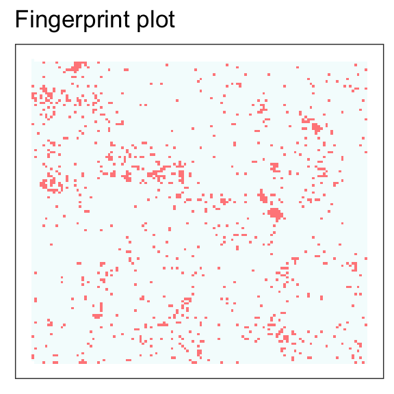
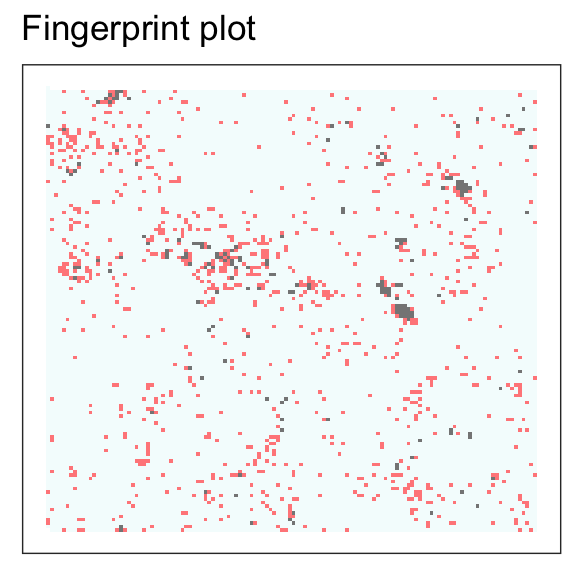

sfutils is built around the Python module retinasdk. It calls this module every time it needs to e.g. fingerprint a document. Some of the functionality that the API offers, such as fingerprint plots and fingerprint comparisons, are implemented natively in R.
“Documents” are long texts (at least 50 characters). There are several ways to fingerprint a document.
suppressPackageStartupMessages(library(sfutils))
# Text from: https://www.reuters.com/article/us-indonesia-economy-cenbank/indonesia-central-bank-schedules-extra-board-meeting-for-wednesday-idUSKCN1IQ1R6?il=0
txt <- "JAKARTA (Reuters) - Indonesia’s central bank will hold an additional meeting of its board of governors on Wednesday to discuss economic and monetary conditions, Bank Indonesia said in a statement on Friday. “The additional meeting will discuss recent economic and monetary conditions as well as future prospects,” the statement said. It did not elaborate. It said the meeting would not replace the regular monthly monetary policy meeting. The central bank on May 17 raised its benchmark interest rate for the first time since November 2014 in a bid to bolster the fragile rupiah and stem an outflow of capital. The currency has, however, remained weak and was trading near its lowest since October, 2015, this week."For example, you can use the class constructor for the Document class:
doc <- Document(txt)
doc
#> Document object.
#>
#> unique id: 1ee6d88b-2ff2-4e59-9971-d0749029b40d
#> type: document
#> fingerprint: 984 positionsHowever, this is not the recommended procedure. It’s more convenient to call do_fingerprint_document() because it’s likely you want to fingerprint more than one text. This function will detect that and call the “bulk” endpoint, which is more efficient in fingerprinting multiple texts.
doc <- do_fingerprint_document(txt)
doc
#> Document object.
#>
#> unique id: 0a1934b8-f935-4179-aa9f-05bd6acc0849
#> type: document
#> fingerprint: 984 positionsAdditionally, this function will return a Collection object if you pass more than one text.
The one time that you should call Document() instead of do_fingerprint_document() is when you already have a fingerprint (and optionally a unique id) and you just want to construct a class.
doc_fp <- fingerprint(doc)
doc_uuid <- uuid(doc)
# Create a Document
doc <- Document(txt, fingerprint = doc_fp, uuid = doc_uuid)
doc
#> Document object.
#>
#> unique id: 0a1934b8-f935-4179-aa9f-05bd6acc0849
#> type: document
#> fingerprint: 984 positionsIn this case, the API is not called.
A term is (mostly) a single word. The following excerpt is taken from the Cortical documentation manual)
The basic building blocks for performing semantic computations are the representations for single terms. Each Retina contains semantic representations (fingerprints) for a large number of terms, and this page describes how to retrieve these from the API. Furthermore we describe how to query the Retina for semantically similar terms, and retrieve a list of contexts in which a given term can occur.
A term can be fingerprinted by calling
trm <- do_fingerprint_term("jaguar")You can retrieve the context of a term
cntxt <- get_context(trm)
names(cntxt)
#> [1] "chassis" "race" "species" "software" "aircraft" "coupé"
#> [7] "logo"As well as similar terms
trms <- get_similar_terms(trm)
names(trms)
#> [1] "jaguar" "audi" "porsche" "renault" "gt" "chassis" "bmw"
#> [8] "cc" "ford" "litre"You can pass a specific context id or pos_types to make this more specific
contextId <- cntxt$species$context_id
trms <- get_similar_terms(trm, contextId = contextId)
names(trms)
#> [1] "species" "jaguar" "predators" "snakes" "monkeys"
#> [6] "mammals" "mammal" "parrot" "monkey" "leopard"Note that you must pass the contextId as an integer in the following format: “
The following exerpt is taken from the Cortical documentation
As briefly mentioned in the introduction, semantically meaningful operations can be carried out on fingerprints by performing simple binary operations on the positions of the fingerprints. Semantic relationships between fingerprints can be discovered by looking at their overlapping positions in the semantic space. This allows us, for example, to subtract the meaning of one term from the meaning of another term to obtain a more specific representation. In the /expressions endpoint, we offer these binary operations on the fingerprints and, along with this, a flexible way of specifying the input data.
The functionality for expressions is similar as that of terms, with the difference that get_context() and get_similar_terms() may also be called on Collections of semantic expressions.
Similarly to the Document class, Expressions can also be passed as a list to be fingerprinted in bulk.
For more information about constructing semantic expressions, check the ‘Create semantic expressions’ vignette.
The following exerpt is taken from the Cortical documentation
This endpoint allows the user to create category filters, simply and easily, using only a small number of example texts. The newly created category filters can then be used as part of a classification process, where items to be classified can be compared against the category filters using our /compare and/or /compare/bulk endpoints (which you can see in our interactive API documentation). See our similarity metrics’ guide for information on how to interpret the output from the compare endpoints.
A category filter can be created by calling do_create_filter() with a filter name, positive examples and optional negative examples
# Sources
# https://www.reuters.com/article/us-oil-opec-exclusive/opec-russia-prepared-to-raise-oil-output-under-u-s-pressure-idUSKCN1IQ0Q6
# https://www.reuters.com/article/us-opec-meeting-cuts-duration/opec-non-opec-ministers-recommend-9-month-oil-cut-extension-idUSKBN1DT2HA
# https://www.reuters.com/article/us-opec-oil-barkindo/opecs-barkindo-says-opec-non-opec-agreement-rescued-oil-industry-idUSKBN1HR1VE
# https://www.reuters.com/article/us-oil-opec/more-countries-needed-in-opec-non-opec-pact-uaes-al-mazrouei-idUSKBN1HR0O6
filt <- do_create_filter(
"crude",
positive = c(
"ST PETERSBURG/DUBAI (Reuters) - Saudi Arabia and Russia are discussing raising OPEC and non-OPEC oil production by some 1 million barrels a day, sources said, while OPEC’s chief said a complaint from U.S. President Donald Trump over high prices had triggered the idea of upping output. FILE PHOTO: A flag with the Organization of the Petroleum Exporting Countries (OPEC) logo is seen during a meeting of OPEC and non-OPEC producing countries in Vienna, Austria September 22, 2017. REUTERS/Leonhard Foeger/File Photo
Riyadh and Moscow are prepared to ease output cuts to calm consumer worries about supply adequacy, their energy ministers said on Friday, with Saudi Arabia’s Khalid al-Falih adding that any such move would be gradual so as not to shock the market. Raising production would ease 17 months of strict supply curbs amid concerns that a price rally has gone too far, with oil LCOc1 having hit its highest since late 2014 at $80.50 a barrel this month. OPEC began a discussion about easing production cuts following a critical tweet from Trump, OPEC’s Secretary-General Mohammad Barkindo said. Trump tweeted last month that OPEC had “artificially” boosted oil prices.",
"VIENNA (Reuters) - A ministerial committee of OPEC and non-OPEC producers including Russia and Saudi Arabia recommended on Wednesday that OPEC and non-OPEC allies extend oil production cuts by nine months at a meeting the following day. Russian Energy Minister Alexander Novak arrives for a meeting with OPEC oil ministers at OPEC's headquarters in Vienna, Austria, November 29, 2017. REUTERS/Heinz-Peter Bader
“That’s one of the recommendations,” Kuwait’s Oil Minister Essam al-Marzouq told reporters when asked whether the committee had agreed on a nine-month extension. An OPEC source also confirmed that the ministerial meeting agreed with the earlier proposal to extend production cuts until the end of 2018.",
"JEDDAH, Saudi Arabia (Reuters) - OPEC Secretary-General Mohammad Barkindo said on Friday members of the oil producers group were friends of the United States and have a vested interest in its growth and prosperity.Barkindo made his remarks after U.S. President Donald Trump earlier sent a tweet criticizing OPEC over high oil prices. “The Declaration of Cooperation entered into by 24 producing countries in Dec. 2016 and implemented faithfully since 2017 has not only arrested the decline but rescued the oil industry from imminent collapse,” Barkindo said.",
"FRANKFURT (Reuters) - Further oil producers need to join Organization of the Petroleum Exporting Countries (OPEC) and non-OPEC producers in curbing supply, UAE oil minister Suhail Mohamed Al Mazrouei told a German newspaper. OPEC members, Russia and other non-OPEC producers have reduced output since January 2017 aiming to reduce inventories and support prices. The pact runs until the end of this year, and an OPEC meeting in June in Vienna will see participants decide their next course of action."
)
)You can call the same standard methods (such as plots) on category filters
crude_term <- do_fingerprint_term("petroleum")
plot(filt)
plot(filt, crude_term)
#> Fingerprints share 15.7 percent overlap
Comparing a category filter is the same as with the other classes.
data("fps_train")
fps <- as.collection(fps_train$fingerprints)
# To collection --> binary matrix
fps_col <- as.matrix(fps)
# Compare documents
cmp <- do_compare(fps_col, filt)
# To data.frame
cmp_df <- as.data.frame(cmp)
names(cmp_df) <- "filter"
# Order
ordrd <- order(cmp_df$filter, decreasing = TRUE)
# Get uuids of 10 most similar documents
uuids_sim <- row.names(cmp_df)[ordrd[1:10]]
# Retrieve texts for those documents
texts_sim <- as.list(do_search_collection(fps, uuids_sim))
# Get texts
cat(text(texts_sim[[1]]))
#> King Fahd said today Saudi Arabia wants
#> oil price stability and he called on non-OPEC producers to
#> avoid harmful competition with the 13 nation group.
#> His plea, in an interview with Reuters and the television
#> news agency Visnews, came ahead of a state visit he will make
#> to Britain later this month.
#> King Fahd was asked whether Saudi Arabia would be prepared
#> to reduce its oil output below its OPEC quota of 4.133 mln
#> barrels per day (bpd) to defend the 18 dlr benchmark price
#> agreed to by OPEC last December.
#> The King replied: "Saudi Arabia doesn't decide prices by
#> itself but certainly desires price stability."
#> Non-OPEC countries "must help us in a framework of common
#> interest so that there is no type of competition which could
#> prove harmful to everyone," he said.
#> Asked if he saw the 18 dlr per barrel benchmark as a first
#> step towards higher world oil prices, King Fahd said it was not
#> for Saudi Arabia but for all OPEC countries to determine such
#> issues. Iran and Algeria have already called for a higher
#> benchmark.
#> In recent weeks the 18 dlr level has come under pressure,
#> due partly to quota violations by some OPEC members. King Fahd
#> said Saudi Arabia, the world's largest oil exporter, was
#> adhering to decisions made at OPEC's December conference which
#> set a 15.8 mln bpd output ceiling for the first half of 1987.
#> A major non-OPEC producer, Britain has so far resisted the
#> group's pleas to curb its North Sea oil output.
#> The King also urged the world community to help the
#> Palestinians return to their homeland and called for a peaceful
#> end to the Iran-Iraq war. The 6-1/2-year-old war could not be
#> resolved on the battlefield, he said.
#> REUTER
#>
cat(text(texts_sim[[2]]))
#> OPEC has reaffirmed its commitment to
#> fixed crude oil prices of around 18 dlrs a barrel and an
#> overall output ceiling of 15.8 mln barrels per day (bpd) to
#> defend prices, its president Rilwanu Lukman said.
#> He told a news conference here "After due consultation with
#> my colleagues in OPEC, I hereby wish to emphasize that Nigeria
#> and all member countries of OPEC remain determined to uphold
#> the December agreement by adhering strictly to their various
#> quotas and official selling prices."
#> Lukman added no extraordinary OPEC conference was planned.
#> "We are in a position to re-confirm that, despite misleading
#> news in foreign media to the contrary, ... OPEC member
#> countries as a whole produced below their agreed quota in the
#> month of February," Lukman, who is Nigerian oil minister, said.
#> Lukman put the overall OPEC output shortfall in February at
#> 900,000 bpd and said this was as a result of their firm
#> determination to defend official selling prices of 18 dlrs
#> agreed upon last December in Geneva.
#> The December agreement set an overall output ceiling for
#> OPEC of 15.8 mln bpd for first half 1987 and restored fixed
#> prices as from February 1 around a reference point of 18 dlrs.
#> Oil prices rallied immediately after the Geneva accord but
#> fell again last month on reports that OPEC was producing more
#> than the agreed level.
#> "The idea was to suggest that OPEC's agreement would not
#> hold and this caused some customers to hold back purchases of
#> OPEC oil and resort to destocking to meet their needs," Lukman
#> said.
#> He said the 900,000 bpd shortfall last February was based
#> on the verified figure for 10 out of OPEC's 13 members, adding
#> that Nigeria alone had a shortfall in production of 100,000
#> bpd.
#> Iraq disassociated itself from the December agreement,
#> while the production figures of Ecuador and the United Arab
#> Emirates needed to be verified, Lukman said.
#> "If that is the price we have to pay to make the agreement
#> succeed, we are ready ... OPEC is not changing its price level
#> of 18 dlrs," the group's president said.
#> He said the OPEC price differentials committee meeting
#> formerly postponed to April had been put off indefinitely.
#> "Furthermore, no extraordinary meeting of the conference is
#> at the moment contemplated since most agreements reached in
#> December are being adhered to," he said.
#> Asked if the committee did not need to meet soon to narrow
#> the gaps in the prices of the various OPEC crudes -- fixed in
#> relation to the 18 dlr benchmark -- Lukman replied "We consider
#> the defence of our prices much more crucial than differentials."
#> Lukman said OPEC was aware that consumers had heavily drawn
#> on stocks of both crude oil and refined products to levels well
#> below this time last year and soon they would return to the
#> market in search of crude.
#> "We don't see that there is going to be any difficulty in
#> maintaining the 18 dlr price throughout the rest of the year,"
#> Lukman said.
#> The OPEC president praised non-OPEC oil producers, which he
#> said had contributed to the group's efforts to stabilise
#> prices, but he criticised Britain for maintaining its long-held
#> view not to do anything to help the market.
#> "We are quite confident, however, that in the long-term with
#> two-thirds of the world's reserves in OPEC hands, the future is
#> ours. We will use that advantage responsibly," he said.
#> Lukman described the disruption in Ecuador's output
#> following an earthquake as tragic, but refused to say if the
#> South American country would be allowed a higher output quota
#> when it recovered from the disaster.
#> REUTER
#> Collections are used to group multiple expressions, terms, and documents. While it is certainly possible to create a Collection that contains a mixture of these classes, it is not recommended. Instead, create different collections for different classes.
There are several ways to create a Collection. Regardless of the method you choose to create a collection, you must always first create a list that contains fingerprint-related class objects.
data("fps_train")
tmp <- fps_train$fingerprints[1:10]
# Print a small subset
str(head(tmp))
#> List of 6
#> $ :Formal class 'Document' [package "sfutils"] with 4 slots
#> .. ..@ text : chr "Magma Copper Co, a subsidiary of Newmont\nMining Corp, said it is cutting its copper cathode price by\n0.75 cen"| __truncated__
#> .. ..@ fingerprint: num [1:984] 4 7 8 18 19 30 35 47 62 79 ...
#> .. ..@ uuid : chr "125fb979-9f92-47ae-bf96-06b408169edf"
#> .. ..@ type : chr "document"
#> $ :Formal class 'Document' [package "sfutils"] with 4 slots
#> .. ..@ text : chr "International Coffee Organization, ICO,\nproducing countries will present a proposal for reintroducing\nexport "| __truncated__
#> .. ..@ fingerprint: num [1:984] 8 9 18 19 20 47 60 61 62 72 ...
#> .. ..@ uuid : chr "9abd155e-1d30-4315-a872-200d1a95cb11"
#> .. ..@ type : chr "document"
#> $ :Formal class 'Document' [package "sfutils"] with 4 slots
#> .. ..@ text : chr "Sugar imports subject to the U.S.\nsugar import quota during the week ended January 9, the initial\nweek of the"| __truncated__
#> .. ..@ fingerprint: num [1:984] 7 8 9 19 30 72 78 121 126 154 ...
#> .. ..@ uuid : chr "6e2fbf10-57af-4a28-8dc8-aa3d49c21291"
#> .. ..@ type : chr "document"
#> $ :Formal class 'Document' [package "sfutils"] with 4 slots
#> .. ..@ text : chr "U.S. grain carloadings totaled 26,108\ncars in the week ended February 21, down 2.2 pct from the\nprevious week"| __truncated__
#> .. ..@ fingerprint: num [1:984] 8 19 76 77 78 79 115 116 117 118 ...
#> .. ..@ uuid : chr "63d4b328-4518-4e20-9431-70bb3c4c4e34"
#> .. ..@ type : chr "document"
#> $ :Formal class 'Document' [package "sfutils"] with 4 slots
#> .. ..@ text : chr "Diamond Shamrock Corp said that\neffective today it had cut its contract prices for crude oil by\n1.50 dlrs a b"| __truncated__
#> .. ..@ fingerprint: num [1:984] 8 9 18 19 20 35 62 72 78 121 ...
#> .. ..@ uuid : chr "487e2756-8f2e-4318-b308-00b16b190a37"
#> .. ..@ type : chr "document"
#> $ :Formal class 'Document' [package "sfutils"] with 4 slots
#> .. ..@ text : chr "A study on grain certificates due out\nshortly from the Government Accounting Office (GAO) could show\nthat cer"| __truncated__
#> .. ..@ fingerprint: num [1:984] 8 9 19 20 35 36 37 48 60 61 ...
#> .. ..@ uuid : chr "94e41525-5797-42a6-8f8e-7ea2abee47d1"
#> .. ..@ type : chr "document"Notice that this is a list containing several Document objects.
# Turn the list into a collection
col <- as.collection(tmp)
col
#> Collection object.
#>
#> no. documents: 10You may also directly call the class constructor, although this is not recommended
col <- Collection(tmp)
col
#> Collection object.
#>
#> no. documents: 10A collection object is essentially a list, so you can treat them as such
# Index
col[[1]]
#> Document object.
#>
#> unique id: 125fb979-9f92-47ae-bf96-06b408169edf
#> type: document
#> fingerprint: 984 positionsIf you subset a Collection, then you must turn the resulting subset into a new Collection object
# Subset
col_ss <- col[1:5]
is(col_ss) # Not a Collection object
#> [1] "list" "vector"
col_ss <- as.collection(col_ss)A collection can be turned into a normal list by doing either one of the following
col_unlist <- as.list(col)
col_unlist <- entries(col) # We use this function to retrieve the list stored in the entries slot of the S4 classA helpful feature of Collections is that they can be searched for a specific unique id
id <- uuid(entries(col)[[6]])
do_search_collection(col, id)
#> [[1]]
#> Document object.
#>
#> unique id: 94e41525-5797-42a6-8f8e-7ea2abee47d1
#> type: document
#> fingerprint: 984 positionsYou can also search for multiple ids
ids <- c(uuid(entries(col)[[6]]), uuid(entries(col)[[7]]))
do_search_collection(col, ids)
#> Collection object.
#>
#> no. documents: 2You can turn a Collection into a sparse binary matrix using the following command
col_sbm <- as.matrix(col)
col_sbm[1:5, 1:5]
#> 5 x 5 sparse Matrix of class "dgCMatrix"
#> p1 p2 p3 p4 p5
#> 125fb979-9f92-47ae-bf96-06b408169edf . . . 1 .
#> 9abd155e-1d30-4315-a872-200d1a95cb11 . . . . .
#> 6e2fbf10-57af-4a28-8dc8-aa3d49c21291 . . . . .
#> 63d4b328-4518-4e20-9431-70bb3c4c4e34 . . . . .
#> 487e2756-8f2e-4318-b308-00b16b190a37 . . . . .This returns an object of class dgCMatrix from the Matrix library. This matrix can be used to compare the documents to some reference fingerprint
ref <- do_fingerprint_term("petroleum")
do_compare(col_sbm, ref)
#> a52354fb-52ad-4715-83b2-285be2bb9ab1
#> 125fb979-9f92-47ae-bf96-06b408169edf 0.3643643
#> 9abd155e-1d30-4315-a872-200d1a95cb11 0.2393891
#> 6e2fbf10-57af-4a28-8dc8-aa3d49c21291 0.3080375
#> 63d4b328-4518-4e20-9431-70bb3c4c4e34 0.2534708
#> 487e2756-8f2e-4318-b308-00b16b190a37 0.3309203
#> 94e41525-5797-42a6-8f8e-7ea2abee47d1 0.2323483
#> 325282a6-a66c-41cd-b0f7-1865d8e6efc5 0.3291601
#> cf5d3db4-89a0-4992-8220-198f7e8c5bdf 0.3133181
#> cd3a4cdc-9c87-4bd3-8158-3271a08a51ad 0.3661246
#> dfc62156-9a58-48fd-b5ec-6d9976fd7b77 0.3678848